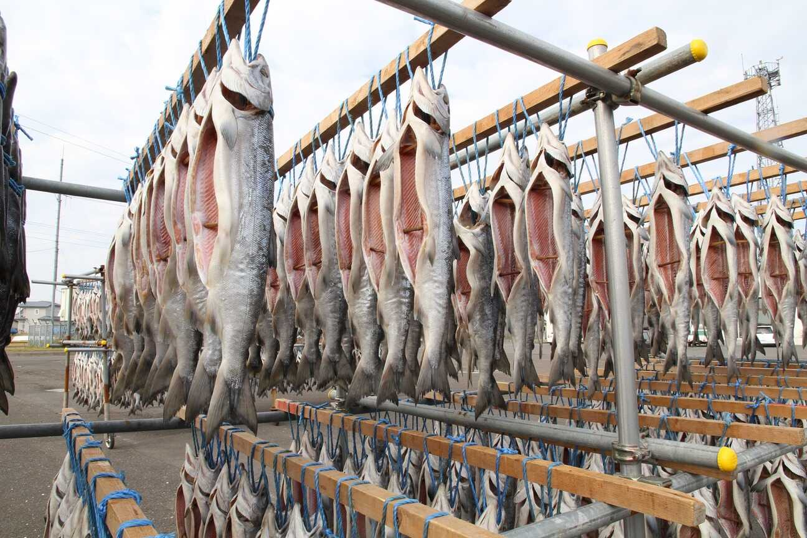

昭和40年代、人工ふ化事業が結実し、長く不漁が続いた鮭漁は、 前年比2倍もの驚異的漁獲量更新を繰り返します。かつての高級魚は、 日本の食卓を彩る最もポピュラーな食材の一つとなり、全国の店頭には日々塩鮭が並びます。 鮭を巡る状況が大きく変わる中、かつて内陸開拓を牽引した標津線は、 東北地方からの季節労働者・青森衆を招く「道」となり、不足する鮭漁期の労働力補強に貢献しました。 鉄道が廃線となったいまは、アスファルトの「道」を通り、全国そして世界から、 鮭加工に従事するため集まる「シャケバイ」と呼ぶ若者達の姿が、毎年秋の風物詩となっています。 一万年に渡り、当地で織りなされた数々の物語。そこには常に鮭との関わりがありました。 鮭に笑い、鮭に泣いた根室海峡沿岸は、人も自然も、あらゆるものが鮭とつながる「鮭の聖地」として、 いまもその恵みを求める人々の往来が続いています。

西別鮭寒風干し（別海町観光協会提供）